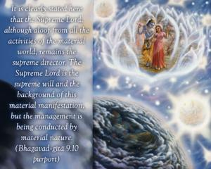
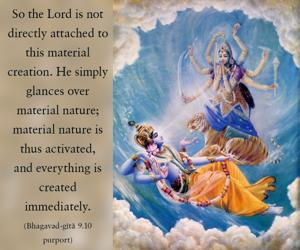
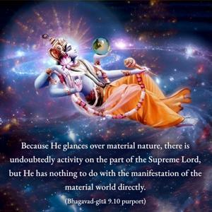
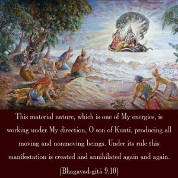

This material nature, which is one of My energies, is working under My direction, O son of Kuntī, producing all moving and nonmoving beings. Under its rule this manifestation is created and annihilated again and again.




It is clearly stated here that the Supreme Lord, although aloof from all the activities of the material world, remains the supreme director. The Supreme Lord is the supreme will and the background of this material manifestation, but the management is being conducted by material nature. Kṛṣṇa also states in Bhagavad-gītā that of all the living entities in different forms and species, “I am the father.” The father gives seeds to the womb of the mother for the child, and similarly the Supreme Lord by His mere glance injects all the living entities into the womb of material nature, and they come out in their different forms and species, according to their last desires and activities. All these living entities, although born under the glance of the Supreme Lord, take their different bodies according to their past deeds and desires. So the Lord is not directly attached to this material creation. He simply glances over material nature; material nature is thus activated, and everything is created immediately. Because He glances over material nature, there is undoubtedly activity on the part of the Supreme Lord, but He has nothing to do with the manifestation of the material world directly. This example is given in the smṛti: when there is a fragrant flower before someone, the fragrance is touched by the smelling power of the person, yet the smelling and the flower are detached from one another. There is a similar connection between the material world and the Supreme Personality of Godhead; actually He has nothing to do with this material world, but He creates by His glance and ordains. In summary, material nature, without the superintendence of the Supreme Personality of Godhead, cannot do anything. Yet the Supreme Personality is detached from all material activities.